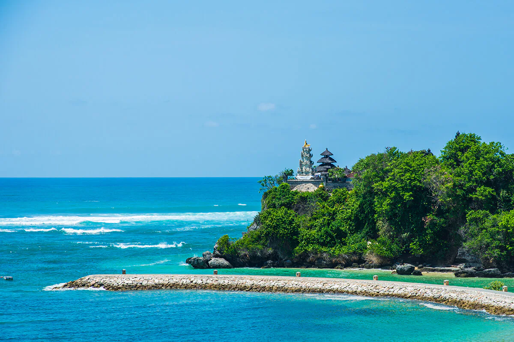
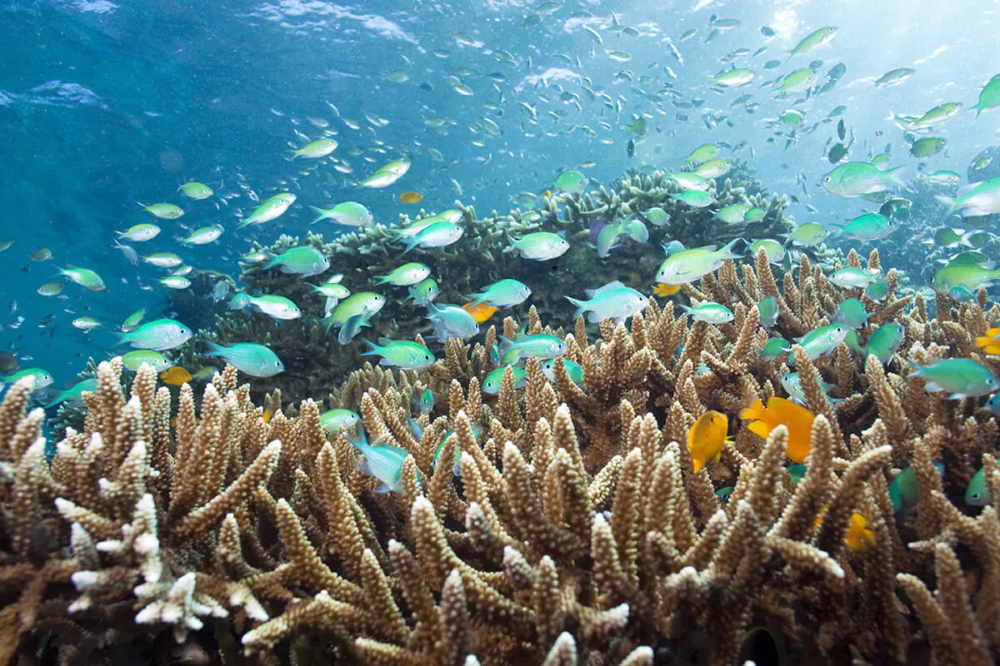
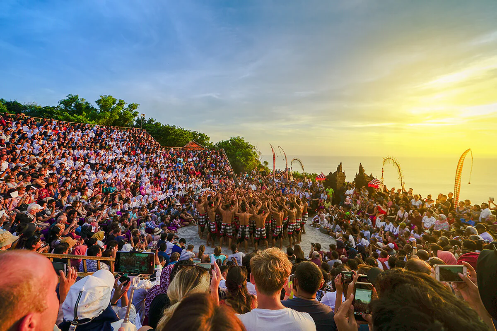

Bali Indonesia
Land of the Gods

Also known as the Land of the Gods, Bali appeals through its sheer natural beauty of looming volcanoes and lush terraced rice fields that exude peace and serenity. It is also famous for surfers’ paradise! Bali enchants with its dramatic dances and colorful ceremonies, its arts, and crafts, to its luxurious beach resorts and exciting nightlife. And everywhere, you will find intricately carved temples.
The Handcraft of the Gods
There are thousands of gift shops in Bali. From Denpasar to Ubud, you'll find many things
you'd like to bring back home. Balinese signature souvenir range from delicious snacks and
beverages, to the exquisite handcrafted goods like Tenun Bali.
If you are thinking of bringing home souvenirs, your best bet is the souvenir market at
Sukowati, where you may be overwhelmed by choice.
Most of the starred hotels are located near the beach. Some even have their own private spots at
certain beaches, where you can splurge on exclusive privilege. You can find them easily at
popular spots like Kuta, Sanur, and Seminyak.

Kuta has a large variety of boutiques and shops, selling everything from bright T-shirts, surf-wear, flip-flops to creative trinkets. If you wish to buy dried foodstuffs, Bali coffee is the most aromatic one. You may also want to buy aromatherapy essential oils to sprinkle your bath with.
Savor the Atmosphere
As Bali is located 8 degrees south of the equator, you will find the climate to be the typical tropical,
warm and humid all year round with two main distinctive seasons: Dry Season and Rainy Season.
Some of the areas around Bali's central mountains (volcanoes) have several peaks over
3,000 meters above sea levels. Up here the temperatures are considerably cooler, and there
is much more rainfall than in the coastal areas.
Bali’s white beaches are certainly a favorite destination for family holidays. There are a variety
of watersports available, such as banana boats, parasailing or jet skiing, go swimming or you
may just linger and enjoy good sunbathing by the sea.
Kuta is one of the most well-known beaches in Bali. Along with this stretch are an array of hotels,
restaurants, shops, and cafes. In the evenings the area throbs to the beat of disco music.
For a quieter evening enjoy the beach at Jimbaran, a popular spot to eat fresh barbecued seafood.
Seminyak is home to five-stars International hotels and luxurious accommodation studded with
fancy dining spots. Sanur Beach also dotted with hotels and restaurants. You can also visit
Nusa Dua, where more private beaches front super deluxe hotels.
Consume your Vitamin Sea
Surfers love the waves at Nusa Lembongan near Nusa Penida. These islands are a 45 minutes
boat trip from Nusa Dua or from Sanur.
At Nusa Penida’s south western coast are the Manta Point and the Malibu point where divers can
swim with Travally, big rays, and even sharks. Kelingking Beach, Atuh beach and Broken beach
among the most famous spots of Nusa Penida.
The best dive spots can be located at Menjangan island, with its reef flat, anchor wreck,
eel garden and caves to explore. Located in the western part of Bali, you can enjoy the rare
sight of deer swimming near the beach. Pemutaran is also famous for its diving activities
renowned for reef conservation.
Try exploring or trekking the West Bali National Park, where you may get up close and personal
with Bali’s rich flora and fauna, such as Jalak Bali or the Bali Starling.
Bali offers first-class adrenaline-pumping white water rafting down the spectacular Ayung River
by Ubud. If you enjoy cycling, Ubud and its surrounding is a wonderful town to bike around.
There are also good cycling paths at Uluwatu in the south.

Pump your Adrenaline
Mountain climbers may want to climb up Gunung Agung. Begin your ascend from behind the temple or
through the village of Sebudi. However, make sure to ask permission first from the temple
authorities, as the Balinese religion prescribes that no one may stand higher than the sacred
temple especially when ceremonies are being held.
Another mountain for your adventurous hike is the beautiful Mount Batur, that overlooks the
serene Lake Batur in Kintamani.
The Kecak dance is staged most dramatically in the open-air settings on a cliff, by Uluwatu
temple. Experience the unforgettable moments where the sun slowly lowering in the sea
over the horizon beyond this beautiful temple serenade with Balinese most iconic art
performance. The Kecak dance tells the story of Ramayana wherein prince Rama’s wife,
Sita, is abducted by the ogre Rahwana.

Feast you Eyes and Soul
After exploring hours are done for the day, you can surrender in total relaxation and experience the best of Balinese spa, located all over Bali. Balinese spa products are made with fine quality local ingredients and are perfect for you to also bring home as a souvenir!
Get Around
There are many modes of transport to help you get around in Bali. A variety of excellent
half day, full day and overnight tour packages are available from your hotel desk or any of
the numerous travel agents and tour operators which abound in Bali. You can also find a car
and driver who will also be your guide. Tell the driver your desired route and negotiate a fee.
An important virtue to have while on the road in Bali is patience! Although the road system in
the heavily populated areas is quite reasonable (condition wise), it can also be heavily
congested at peak periods. Ceremonial processions often take up the entire road so if
you're caught behind a procession, enjoy the colorful experience.
Get Here
By Air
The gateway to enter Bali by a flight route is through the Ngurah Rai International Airport.
International and national flights are available around the clock, to take the visitor to
the Island of The Gods.
The airport is scheduled to close once a year during the Balinese Nyepi ceremony, for 24 hours.
At Nyepi, every corner of Bali is performing the sacred rituals which made the island ceased
any activities outside of these rituals for one whole day.
Overland
Public transport to Bali is available through travel companies and busses. If you opt to
experience a road trip, be sure that you are equipped and ready for the long hours.
From the capital of Jakarta, an overland road trip to Bali can range from 30 hours to a
few days. All depending on whether or not you want to stop by and enjoy the cities that
you are going to pass through.
By Sea
Bali is accessible by ferry ride from an island of Lombok in West Nusa Tenggara. In Lombok,
you can explore the beauty of Mount Rinjani and pristine beaches on the Gili islands.
From Java Island, you can get to Bali by taking a ferry from Banyuwangi. The city with the slogan
of The Sunrise of Java is where you can embark to experience the adventurous path to Ijen Crater
and its mesmerizing Blue Fire.
As the Indonesian government reopens the island for domestic and international travelers, do also check out the latest information related to the reopening of Bali.